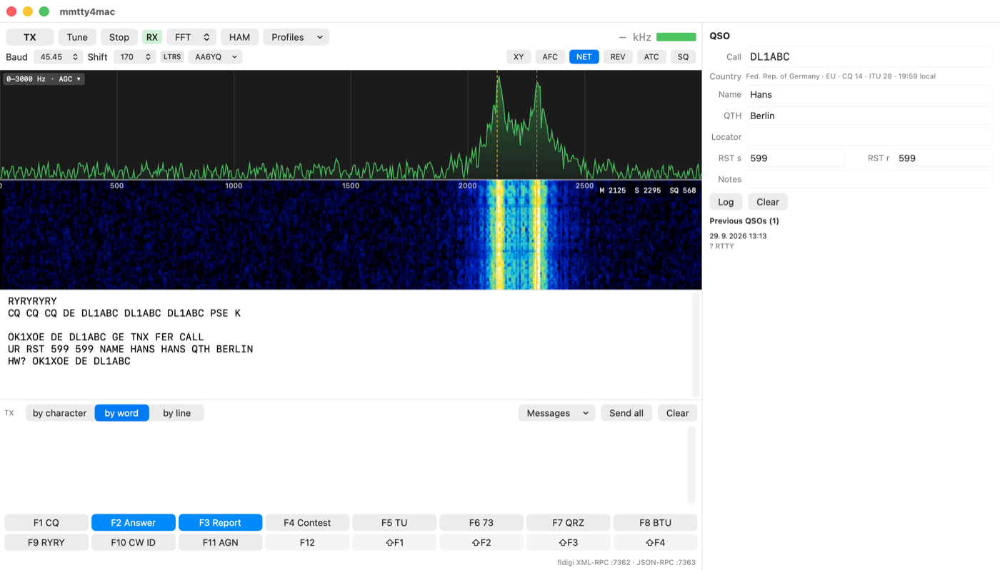
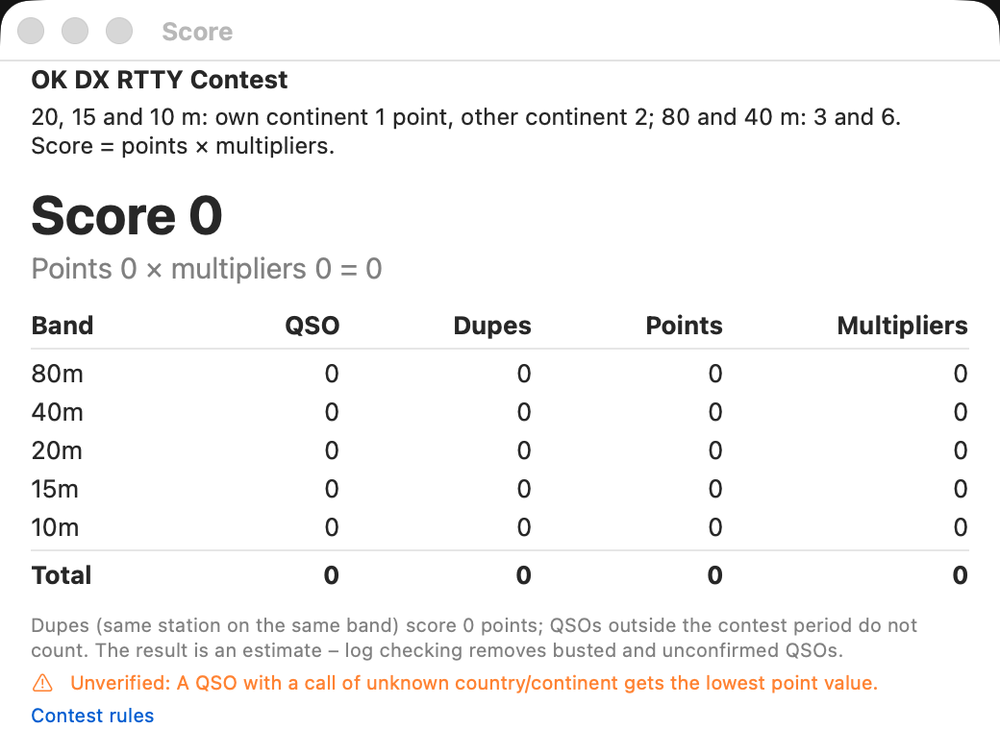
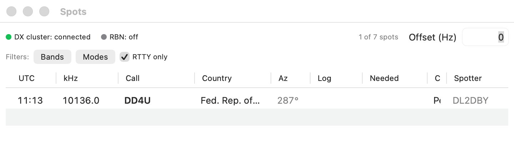
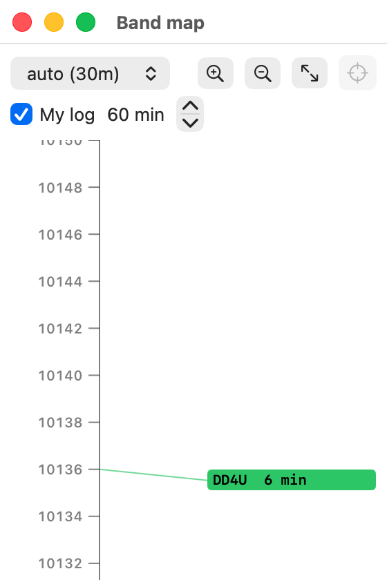

45.45
baud Baudot, up to 110
Sound-card RTTY for macOS — built on the MMTTY demodulator, made for contests.
From the first CQ to the Cabrillo file — receive, transmit, log and score, with your radio on the USB cable and the Mac's sound card.



